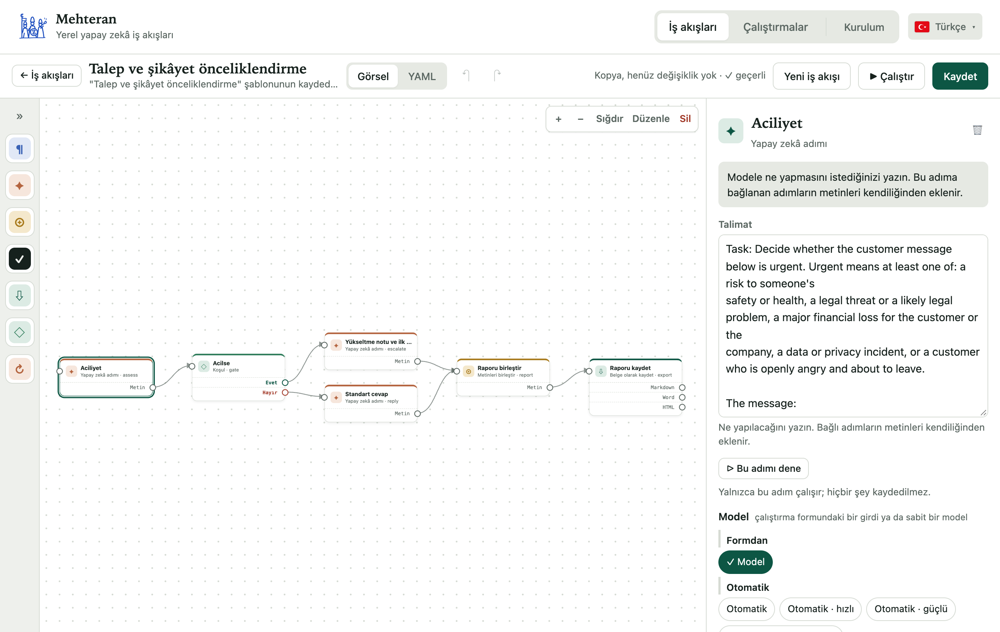

Everything you need to install Mehteran, connect your AI tools, run and build workflows. The full reference has every detail, the API and the internals.
No section contains these words.
Quick start
You need a Windows or Mac computer and an internet connection. You do not need to install anything else first. For Linux, see Other ways to install.
Download Mehteran. Click this link: Download Mehteran (zip file). Your browser saves the file Mehteran-main.zip, usually in the Downloads folder.
Unpack the zip file.
Windows: right-click Mehteran-main.zip, choose Extract All…, then click Extract.
Mac: double-click Mehteran-main.zip. If the Mehteran-main folder is already there, skip this step.
Start Mehteran. Open the unpacked Mehteran-main folder. If it contains a second Mehteran-main folder, open that one.
Windows: double-click Open Mehteran.bat. If "Windows protected your PC" appears, click More info, then Run anyway.
Mac: double-click Open Mehteran.command. If the Mac says that it cannot open the file, open System Settings → Privacy & Security, scroll down, click Open Anyway for Open Mehteran.command, and confirm. On older macOS versions: right-click the file, choose Open, then click Open again.
A window with text opens. This is Mehteran's window: keep it open while you use Mehteran. The first start can take a minute or two. Then Mehteran opens in your browser.
Choose your AI account. Mehteran opens on the Setup tab and asks Which AI account do you have? Click one choice:
Claude: a Claude Pro or Max subscription.
ChatGPT: ChatGPT Plus or Pro.
Google: a Google account.
No subscription: a free model that runs on this computer. It is slower and needs enough memory.
If you are not sure, choose the account that you already pay for. Mehteran then installs what it needs. This takes a few minutes.
Sign in. When the installation is finished, a sign-in button appears. Click it: Sign in with Claude, Sign in with ChatGPT or Sign in with Google. A window and a sign-in page in your browser open. Sign in there with your account. The Setup page updates by itself.
If you chose No subscription, click Download the recommended model instead. The button also shows the name of the model.
Start your first run. When you see Setup is complete, click Go to workflows →. Find the card Work with a document.
To try a short sample, click Try with a sample document.
To use your own file, click Choose a document, then Choose a file, and pick a PDF or Word file (for example a letter or a contract).
Then click Start the run.
Get the result. Mehteran shows each step while it works. When the run is finished, the explanation appears under Results. To save it as a Word file, click ↓ Explanation (Word).
To start Mehteran again later, double-click the same file (Open Mehteran.bat or Open Mehteran.command). Closing Mehteran's window stops Mehteran. To use another AI account, click Change on the Setup tab.
Mehteran runs AI workflows on your computer. A workflow is a series of connected steps: read a document, ask a model, check the answer, ask a person, save a file. Mehteran calls the AI through the command-line tools of your existing subscriptions (Claude Code, Codex, Antigravity CLI) or through models on this computer (Ollama, LM Studio, llama.cpp). It keeps no keys and no accounts of its own.
Workflow
A graph of steps, saved as one YAML file. You build it on a canvas or write it by hand.
Step
One box of the workflow: read a document, ask a model, a condition, a loop, an approval, a merge or an export.
Template
A ready-made workflow that comes with Mehteran (78 of them). Open one and save it as your own to change it.
Run
One execution of a workflow with your inputs. It keeps a frozen copy of the workflow, every prompt and every result.
AI tool
The program that calls a model: Claude Code, Codex, Antigravity CLI, Gemini CLI, Ollama or a local server.
The interface has three tabs: Workflows (the library and the editor), Runs (the history and live runs) and Setup (the AI tools and local tools).
Install: details and other ways
How Mehteran runs
Mehteran runs on macOS, Windows and Linux. It uses Python 3.11 or later; when the computer has none, it installs a private Python (uv) for itself on the first start. The interface opens in your browser at http://127.0.0.1:8766/; if the browser does not open by itself, open that address. It runs while its terminal window stays open. To stop it, close that window or press Ctrl+C in it. If macOS still does not start the file, see Troubleshooting.
macOS / Linux
Windows
Interface (double-click)
Open Mehteran.command
Open Mehteran.bat
Interface (terminal)
./mehter ui
mehter ui
Command line
./mehter <command>
mehter <command>
With npm (Node.js 18+)
npx mehteran [<command>]
Other ways to install
From the GitHub page: click Code, then Download ZIP. This is the same zip file as in the quick start.
Linux: unpack the zip file (or use git clone https://github.com/tolgabuyuktanir/Mehteran.git), then run ./mehter ui in a terminal in that folder.
With git: a copy made with git clone stays up to date (see Updates).
With npm
If Node.js 18 or later is on the computer (Claude Code, Codex and Gemini CLI are installed with it), run npx mehteran. The first run installs the source bundled with the npm release into ~/Mehteran and opens the interface. Next time, run npx mehteran again. Every command works the same way: npx mehteran templates is ./mehter templates. Commands run in the Mehteran folder, so give file paths as full paths. To use another folder, set MEHTERAN_DIR.
Updates
If you got Mehteran with git clone, mehter update brings it up to date. The launcher runs it before the interface starts. It fetches from GitHub and applies only a fast-forward merge. Without internet or a GitHub sign-in, or when the code was changed on this computer, it skips the update with a message, and Mehteran starts as it is. A copy installed with npx mehteran is not updated: to try a new npm release, install it in a new folder with MEHTERAN_DIR. If you downloaded a zip file, download the new zip. Your workflows and runs are not in the code folder, so they stay where they are (see Where your data is). When the code changes while the interface runs, the page shows a banner: close the terminal window and start Mehteran again.
Where the tools go
The tools that Mehteran installs go into the code folder (.runtime/) or into your user folder (Claude Code, Antigravity CLI and the private Python: ~/.local/bin; on Windows under %LOCALAPPDATA%). No administrator rights are needed.
Connect your AI tools
On the first start, the Setup tab asks Which AI account do you have?: Claude, ChatGPT, Google or No subscription (a free model on this computer). Mehteran puts that tool first in the model order and installs what it needs: the tool and the PDF reader (for No subscription, Ollama). Then one button signs you in (Sign in with Claude, Sign in with ChatGPT or Sign in with Google): a window and a sign-in page in your browser open, and the page updates by itself. Without a subscription, Download the recommended model (…) downloads a model that fits the computer's memory. At the end the page shows Setup is complete and "Account: … · Change"; Change asks the question again.
Below this box, the tab shows one card per AI tool, two per row. A card shows whether the tool is installed and signed in, the account it uses, and how much of its usage limit is left. Only "API key (billed)" is marked as a caution. A tool that is ready shows its name, one status line and Test; the rest is under Details. A tool that is not ready has an install button and its sign-in buttons (for example Sign in with Claude). Install missing tools installs the tool of your account and the PDF reader.
Below the cards, four parts are folded under their titles. Click a title to open it.
AI tools of the workflows: the settings of the automatic model choice, in four parts. Model order lists the models in the order that auto tries them, with the current automatic choice below; Fast, strong and local-only choices shows the other automatic choices. Settings per tool has, for each tool, At once (the calls it may make at the same time) and Allow an API key (billed). Scheduled and batch runs has the permission for subscriptions (see Subscriptions and the providers' terms). Local server (OpenAI-compatible) is folded again.
Run in the background: Mehteran starts by itself when you sign in to the computer, so that scheduled runs start on time.
Local tools: the optional tools of this computer (see Local models and tools). The PDF reader comes first and is marked Required.
API key (billed). Personal Google accounts can no longer sign in to Gemini CLI; the free Google path is Antigravity CLI.
Google
Ollama
Local
This computer
Local server (LM Studio, llama.cpp, vLLM)
Local
This computer
No surprise bills
Mehteran removes the API key variables (ANTHROPIC_API_KEY, OPENAI_API_KEY, GEMINI_API_KEY and the others) from every model call, so a tool cannot bill an API account by accident. To use an API key on purpose, turn on Allow an API key (billed) for that tool under Setup → AI tools of the workflows → Settings per tool. A key that a tool stores itself (for example a Codex API-key login) is shown on its card as "API key (billed)".
Automatic model choice
A step's model can be auto. When a run starts, Mehteran picks the first tool of your Model order that is installed, signed in and not billed by an API key. Without your own order it uses Claude Code, Codex, Antigravity, Ollama. Variants:
auto:fast: the tool's fast model or a low thinking level.
auto:strong: the tool's strong model or a high thinking level.
auto:local: only a model on this computer.
A tool whose usage limit has not reset yet goes to the end of the order. The choice is frozen into the run, so a resumed run uses the same models.
Calls at once
Each tool has a limit of calls at the same time over all runs (Claude Code and Codex 2, Antigravity 1, Ollama 1). Change it with At once under Setup → AI tools of the workflows → Settings per tool. A single run makes at most 4 model calls at the same time.
Subscriptions and the providers' terms
Mehteran starts the providers' own, unmodified command-line tools on your computer, signed in with your own account. It never reads, stores or forwards your sign-in.
Anthropic's Consumer Terms, section 3.7, prohibit accessing the services "through automated or non-human means, whether through a bot, script, or otherwise". The exceptions are an Anthropic API key and uses that Anthropic explicitly permits.
Claude Code's legal page allows "an end user [...] signing in to the unmodified Claude Code binary with their own Claude subscription". It also says: "Advertised usage limits for Pro, Max, and Ultra plans assume ordinary, individual usage of Claude Code". Developers who build products "should use API key authentication".
OpenAI documents codex exec for "repeatable workflows and pipelines" (Codex CLI). Its article on Codex with a ChatGPT plan does not address automation.
Google's Gemini CLI terms page says which terms apply to each sign-in type. It does not address automation.
So it is not clearly settled whether scheduled, batch or background runs on a consumer subscription are allowed. You are responsible for the use of your account. For heavy or unattended use (schedules, batches, the background), the providers recommend an API key: turn on Allow an API key (billed) for that tool under Setup → AI tools of the workflows → Settings per tool. A local model (Ollama, LM Studio) has no such terms.
What Mehteran does by default: scheduled and batch runs use only local models and tools with an API key. A step that would use a subscription or a free account is refused, with the reason, when the schedule is made or the batch starts; with the model auto, such tools are skipped. To allow subscriptions for these runs, turn on "Allow subscriptions and free accounts for scheduled and batch runs" under Setup → AI tools of the workflows → Scheduled and batch runs. A run that you start yourself is not affected.
This is not legal advice. Checked on 24 November 2026; terms change.
Run a workflow
On the Workflows tab, find a workflow and click Open. Its page opens with three sections: Run (the run form, shown first), Instructions (the steps in plain words, each AI step with its instruction) and Runs (this workflow's runs). The star and ⋯ (edit, duplicate, download, share, delete) are beside them.
Fill in the inputs: upload the file, type the text, choose the output language. The models are chosen automatically; to change them, open Options. Same as last time fills in the values of your last run (never files or anything like a password).
Read the line beside Start the run: the number of model calls and the tools. Details shows the whole estimate: the upper bound with retries, each tool's usage now, and where each step sends its text ("Sent to: Anthropic", "Stays on this computer").
Click Start the run. The run opens on the Runs tab, where you see each step live.
The Run section of "Document summary": the number of steps with a link to their instructions, then the inputs; the options and "Start the run" come below them.
Options of the Run section
Only models on this computer: every step must use a local model. auto becomes auto:local; any other model is refused before the run starts. A workflow can require this with privacy: local. A workflow with a browser agent cannot: the box is off and says why.
Run once for each file: choose up to 50 files. Each file becomes its own run with the same other inputs. At most 2 runs of the batch work at the same time.
Also save the results to this folder: type the full path of a folder. Mehteran confirms it the first time and never overwrites a file: an existing name gets " (2)", " (3)" and so on.
Search sites for you
Two templates search sites with a read-only browser agent (Claude Code, the browser of the Setup tab) and compare what they find. Find home or car listings: the kind, buy or rent, the place, the features you want and a budget; you get a table of listings with links, each wanted feature marked ✓, ✗ or ?. Find a place to stay (hotel): the place, the dates, the guests, a budget and your wishes; you get stays with total and nightly prices, rating, breakfast and cancellation terms. Both run without a window and take about 15 to 20 minutes. They never book, sign in or contact anyone. A site that blocks the search is named in the report with a link, so that you can look there yourself. If a site asks for a check, open it once with Open the browser to sign in under Setup → Local tools → Browser for agent steps.
Experimental templates
Four templates carry an Experimental badge on their library card and a notice on their page: Social video series (it needs paid OpenAI and ElevenLabs API keys), Find home or car listings, Find a place to stay (hotel) (a browser agent on websites that change) and Research and prepare an X post (sharing on X). They work, but check the result before you use it.
Stop, resume, retry
Everything that runs has a stop button (■): in the run list, on the run page and in the header's activity list. Resume continues a failed, cancelled or interrupted run; the steps that finished are kept. A failed step can be retried alone. A run whose program ended (a closed terminal) shows as "interrupted" and can be resumed.
Results and history
Run again uses the YAML saved in the selected run, even if its template has since changed or disappeared. Text inputs come from that run. Choose file inputs again. Model calls use the tools available now.
Mehteran keeps local copies of used built-in templates and can recover a removed template from a saved run. New schedules keep their original workflow version. For older schedules, Mehteran uses the last saved run if available, then the current template.
On the page: when a run ends, its first text result is shown formatted on the run's page, with a download for each file the workflow saved ("↓ Word", "↓ Markdown"). Open in full opens the reader. Run again opens the Run section with the same values (files are chosen again).
Read: a Markdown result opens formatted (headings, lists, tables, links). Formatted / Plain text switches the view. Arabic, Persian or Urdu paragraphs read right to left.
Compare: put the result next to the same result of another finished run of the same workflow. The paragraphs that differ are highlighted.
Edit: change the text with a live preview and save it. The original output never changes; the reader then offers "Original" and "Edited".
Export: export the edited version as Markdown, Word, HTML, PDF or EPUB.
A result open in the reader: Formatted / Plain text, Edit, Download.
The run history
The Runs tab lists every run, grouped by workflow. The search finds the workflow name, the run's name and note, its main input and its status (case and accents are ignored). Rename gives a run a name and a note. Delete removes a finished run and its folder. Delete old runs… removes finished runs older than 30, 90 or 365 days and keeps working runs.
Build your own workflow
Click New workflow and type a name. To change a template, click Edit on its card: a built-in template opens as your own unsaved copy.
Start fast
The empty canvas offers three starters:
Read a document → AI → Save
A text I type → AI → Save
Describe it, I will build it (library): the box at the top of the Workflows tab. Write what you want and click Build the workflow. The automatic choice of your installed tools writes it. While it works, the box shows Transcript of the AI tool: what the tool writes and does, live. Stop ends it. A draft that passes the check is saved and opens with Here is what I built: the steps with the instruction the model wrote for each, which you can edit in place, "Change: …" in one sentence, "Looks good" and "Delete". A draft with problems opens in the editor.
Describe it, I will build it (editor): write what the workflow should do and choose a model. The model writes a first draft (one call, plus one repair call when the draft has problems). The draft opens in the editor unsaved. Check the instruction of every step before you run it.
The editor with a condition: the selected step's instruction and model are on the right.
Edit on the canvas
Click a step type in the palette to add it (a folded palette is one + Add step button). It connects from the selected step and gets the run form's model input when it needs a model. Undo reverses it.
Select a step to edit it in the side panel: its instruction, its model, and under Advanced settings its retries, timeout and Fallback model.
Problems block running (for example an AI step without an instruction). Warnings do not: they point at a step whose result nobody uses, or a workflow with no export step. A click opens the field.
Test this step runs only the selected AI step, with your unsaved changes. The texts of the steps before it come from the last run, or from a sample text you paste. It makes one model call and saves nothing.
The YAML tab shows the same workflow as a file. Changes on either side are checked the same way.
Share and import
Share downloads the workflow as one <id>.mehteran.yaml file, with your name as the author if you type one. Import (or a .yaml file dropped on the library) first shows a preview: the drawing, the inputs, the tools it needs and whether they are ready here, every instruction it sends to a model, and its problems. Add to my workflows imports it.
Step types
Type
What it does
Main settings
document.extract
Reads a file or a web page into text. Scans go through OCR, audio and video through speech to text.
file, ocr, max_chars
ai.cli
Asks a model. The connected texts are added as data.
provider, prompt, output (text or json), json_schema
ai.map
A loop: splits a text into parts (headings, paragraphs, chunks, files) and asks the model once per part, in parallel.
split, max_items, prompt
condition
Takes the true or the false branch. It can ask a model a yes/no question or test the text.
Input files can be pdf, docx, epub, md, txt, csv, tsv, xlsx, odt, rtf, images (png, jpg, tif) and audio or video (mp3, wav, m4a, mp4, mov and more). An eml export is an e-mail draft that your mail program opens; Mehteran never sends mail.
The workflow file
Every workflow is a YAML file (schema_version: 1). The editor writes it for you, but it is short enough to read and write by hand.
schema_version: 1
id: paper-review
name: {tr: Makale incelemesi, en: Paper review}
category: research
inputs:
- {id: paper, type: file, formats: [pdf, docx, md]}
- {id: language, type: language} # the output language, from the flag list
- {id: model, type: provider, default: auto}
nodes:
- {id: read, type: document.extract} # no file named: the only file input
- id: review
type: ai.cli
retries: 2
config:
provider: "{{inputs.model}}"
prompt: Review this paper. List its strengths, its weaknesses and the missing citations.
- {id: save, type: document.export, config: {formats: [md, docx, pdf]}}
connections:
- {from: read.text, to: review}
- {from: review.text, to: save}
outputs:
- {id: report, from: save.docx, label: Report}
Inputs
file (with formats and optional multiple: true for up to 20 files), text (multiline), choice (options), provider (a model), language (the output language) and url (a web page). Inputs are required unless required: false.
Placeholders and data
{{inputs.<id>}} and {{nodes.<id>.<output>}} insert values. A step may use another step's output only when a connection joins them, so the drawing is the real data flow.
An instruction that names no data gets the connected texts after it, each between data tags. The prompt tells the model that this content is data, not instructions.
When the workflow has a language input that the instruction does not use, Mehteran adds "Write the answer in <language>." When the instruction names the language code itself, Mehteran adds what the code means.
The check
A workflow is checked before it is saved or run. The check lists every problem at once with its place in the file: unknown keys, duplicate ids, missing connections, cycles, placeholders that do not resolve, and anything that looks like a credential (keys such as api_key, token, password). On the command line: ./mehter validate my-flow.yaml.
Usage limits and switching models
When a tool reports a usage or rate limit, the step does not fail:
An auto step moves on to the next model of your order.
A step with a Fallback model switches to it at once.
Otherwise the step shows "waiting for the usage limit" and tries again when the limit resets. A wait does not count as a failed attempt.
On the run page, a waiting or failed step offers Keep waiting and Continue with another model. A loop keeps the parts it already has. A limit seen by one run is known to the others, so they do not call that tool until it resets.
The header shows what is left of each tool's usage limit on every tab, for example "Remaining · Claude 31% · 5 hours · Codex 7% · Weekly": for each tool, the window closest to its limit, with its name. Click it to see each window (5 hours, weekly) with the time to its reset. Claude Code and Codex report these values; Mehteran asks Claude Code every few minutes without a model call. The tools report percentages, not token counts. On the Setup tab, each tool's card shows one bar (the window closest to its limit). The card's Details show every window and Mehteran's own counts (today, last 5 hours, last 7 days). From the first run on, Mehteran keeps the computer awake, so a run that waits overnight continues.
Local models and tools
These are optional. Mehteran installs each one only when you ask, under Setup → Local tools or on the command line. Each is a pinned version, checked against a SHA-256 sum. A copy that is already on the computer is found and used.
Under Local tools, the small tools stand side by side: the PDF reader first (Required), then Tesseract OCR, Typst, Pandoc, speech to text, qpdf and the browser for agent steps. The OCR card lists its installed languages in one line; Add languages opens the list of the others. The Ollama card spans the whole width. It has two folded parts: Installed models (N), and Recommended models with the size, memory and languages of each. Models that are too big for this computer, or not for chatting, are folded under Other models (N)….
Tool
What it adds
Ollama
Models that run on this computer. Install it, then download recommended models with their size and memory needs. A step uses ollama/<model>.
Local server
Any OpenAI-compatible server on this computer: LM Studio, llama.cpp's llama-server, vLLM. Only 127.0.0.1 / localhost addresses are accepted. A step uses openai-local/<model>.
Tesseract OCR
Reads scanned PDFs and images.
Typst
Makes the PDF export (with an Arabic-script font).
Pandoc
EPUB export, Word files with real equations, and reading .odt / .rtf.
Speech to text
whisper.cpp with ffmpeg: turns audio and video files into text, on this computer.
qpdf
Repairs damaged PDFs before they are read.
./mehter install-local ollama
./mehter install-local ocr tur eng
./mehter install-local typst
./mehter install-local pandoc
./mehter install-local speech base
./mehter install-local qpdf
Mehteran sizes the context of each Ollama call to the prompt. When a document is still too long for the model, the step fails with a clear message instead of answering from a cut text. Use a loop step (ai.map) or a model with a larger context.
Social video series
The Social video series template makes one narrated video per topic, with captions burned in, for Instagram, YouTube, TikTok or WhatsApp. Choose Reels / Shorts / Status for about 20 seconds or Standard video for about 40 seconds.
On the Setup tab, open Video services at the bottom of the page. Paste your OpenAI API key (scene images) and your ElevenLabs API key (narration). Optional: enter an ElevenLabs voice ID, for example a native narrator for the narration language.
Install FFmpeg and Pango on this computer. The first step of the workflow checks them before any model call.
Write up to 8 topics, one per line, and start the run.
Approve the script. Then listen to the first sentence and approve the voice. Only then are all the videos rendered.
Claude Code writes the script (Opus by default). The image and voice requests go to OpenAI and ElevenLabs with your keys, and they may be charged. The keys stay on this computer; the page never shows a saved key. Without a saved key, Mehteran uses OPENAI_API_KEY and ELEVENLABS_API_KEY from its startup environment.
./mehter run topic-video-series --input "topics=How does an olive tree grow?" --input language=en
./mehter approve <run> review
./mehter approve <run> listen
Command line
./mehter templates # list the templates
./mehter validate my-flow.yaml # check a workflow file
./mehter run document-summary --input document=report.pdf --input language=en
./mehter run my-flow.yaml --input model=claude/opus@high
./mehter runs # the run history
./mehter resume <run> [--node <id>] # continue a run, or retry one step
./mehter cancel <run> # stop a run
./mehter approve <run> <node> # approve a waiting approval step
./mehter update # bring a git copy up to date
./mehter doctor # check the installed AI tools (no model call)
./mehter eval [--model m] [--case id ...] [--out folder] # run the evaluation set
./mehter eval --compare before.json after.json # compare two evaluation reports
./mehter --lang tr runs # messages in another language
run takes a template id or a path to a .yaml file. An input with several files takes --input <id>=<file> once per file. Ctrl+C cancels the run. Exit code: 0 finished, 3 waiting for an approval, 1 otherwise. On Windows, use mehter instead of ./mehter.
Check the AI tools: mehter doctor
An update of an AI tool can drop an option that Mehteran uses. mehter doctor checks each installed tool without a model call: every option that Mehteran passes must appear in the tool's --help (of its subcommand, for example codex exec). It also checks that Claude Code's /usage report can be read and whether Codex has a usage log. It prints one line per check. The exit code is 1 when a check failed.
The evaluation set: mehter eval
mehter eval runs the cases of evals/cases.json: 7 cases over 6 core templates (document-summary, meeting-minutes-actions, contract-risk-review, email-reply-draft, code-review, ask-your-documents). One case asks a question that the document does not answer; one document hides an injected instruction. Rules check each result: the output language, the required facts, forbidden text and the length.
The runs make real model calls with the tools of the Setup tab, so they use your usage limits.
--model sets one model for every step of every case. --case runs only that case (repeat it for more).
The runs use a temporary data folder, so your run history stays clean. The report (JSON) goes to <data>/evals/, or to --out.
--compare shows what changed between two reports, for example before and after you changed an instruction.
The checks are rules, not a judge: a passed case can still read badly.
The book translation
The book translation app is no longer part of Mehteran. A computer that used it (a book in books/, or a config.toml in the code folder) keeps it: when its code is missing, Mehteran puts it back once from the git history, in the same place. ./translate ui (Windows: translate ui), the books, the settings and the instructions keep working. The translation app gets no more updates. A copy installed from npm or a zip file is not changed. New installations do not get the translation app.
Languages
The language button at the top right offers 18 interface languages: Türkçe, English, العربية, Deutsch, Français, Español, Português, Italiano, Русский, فارسی, اردو, Bahasa Indonesia, Bahasa Melayu, Azərbaycanca, Bosanski, Shqip, 简体中文 and 日本語. Arabic, Persian and Urdu turn the page right to left. Every language is complete: the whole interface and every message. Only the labels of the step settings in the editor are in English.
The output language of a workflow is separate: a language input offers every language of the registry and starts at your interface language. Mehteran stores its own messages with their keys, so a run's log appears in the language of whoever reads it.
templates/: your own workflows, one YAML file each.
executions/<run>/: one folder per run: the frozen workflow, the uploaded files, each step's outputs and prompts, and edited results.
databases/mehteran.sqlite3: the state of every run and step.
configurations/: the Setup tab's settings (model order, calls at once, API-key permission). No secrets.
Set MEHTERAN_HOME to use another folder. Sign-ins are kept by the AI tools themselves, in their own folders.
Privacy and security
The interface listens only on 127.0.0.1. Each start creates a new session key that every request must carry, so other web sites cannot send commands to it.
Each model call runs in an empty temporary folder, asks the tool for no tools of its own, and gets the document text between data tags, marked as data.
A url input reads only public addresses. Addresses of this computer and of the local network are refused, also after a redirect.
Saving results to a folder never writes into a system folder or over an existing file. Deleting a run removes only its folder.
The page sends a strict Content-Security-Policy and builds every result from text nodes, so a result cannot run code in your browser.
Logs mask obvious secrets (sk-…, Bearer …, Google and GitHub keys).
Troubleshooting
macOS says it cannot open the file
Open System Settings → Privacy & Security, scroll down, click Open Anyway for Open Mehteran.command, and confirm. On older macOS versions, right-click Open Mehteran.command and choose Open. If you see "you do not have appropriate access privileges", open Terminal, type sh (with a space), drag the file into the window and press Enter.
Windows: Mehteran does not start
If Mehteran's window says that it cannot start from inside the zip file, unpack the zip file first (right-click, Extract All…). Start Open Mehteran.bat from the unpacked folder, not from inside the zip file.
A tool is "not signed in"
On the Setup tab, click the sign-in button of the tool: Sign in with …, in the box at the top or on the tool's card. A window and a sign-in page in your browser open. Sign in there; the page updates by itself. Then you can close the window.
A step waits for a usage limit
That is normal: the run continues when the limit resets. To go on now, click Continue with another model on the step.
PDF export says it needs Typst
Install Typst on the Setup tab (Local tools), then export again. EPUB needs Pandoc in the same way.
A scanned PDF gives no text
Install Tesseract OCR on the Setup tab, with the languages of the document.
The page says the code changed
Click Restart on the message: Mehteran starts again with the new code and the page reloads. It waits while a run is going on. A Mehteran started before this button existed is restarted by hand once: close its terminal window and start it again.
An AI tool fails after the tool was updated
Run ./mehter doctor (Windows: mehter doctor). It names each option of Mehteran's command that the tool no longer knows, and says whether the usage report can still be read.
Code: mehteran/, Python standard library only (PyYAML vendored). Shared code (the tool installer, document reading, the Word and HTML export) is in mehteran/common/. The interface is plain JavaScript with no build step.
Tests: python3 -m unittest discover tests. They use a fake AI tool and make no network calls. CI runs them on Ubuntu (Python 3.11 and 3.14), macOS and Windows (Python 3.12). It does not run the evaluation set (mehter eval), which makes real model calls.
A new step type: add a NodeType in mehteran/nodes.py; the check, the engine and the editor pick it up.
Mehteran'ı kurmak, yapay zekâ araçlarınızı bağlamak, iş akışlarını çalıştırmak ve oluşturmak için gereken her şey. Bütün ayrıntılar, API ve iç yapı ayrıntılı başvuru belgesinde.
Bu kelimeleri içeren bir bölüm yok.
Hızlı başlangıç
Windows ya da Mac bir bilgisayar ve internet bağlantısı yeterlidir. Önceden başka bir şey kurmanız gerekmez. Linux için Diğer kurulum yolları bölümüne bakın.
Mehteran'ı indirin. Şu bağlantıya tıklayın: Mehteran'ı indir (zip dosyası). Tarayıcınız Mehteran-main.zip dosyasını kaydeder; genellikle İndirilenler klasörüne.
Zip dosyasını açın.
Windows:Mehteran-main.zip dosyasına sağ tıklayın, Tümünü Ayıkla… seçeneğini seçin, sonra Ayıkla'ya tıklayın.
Mac:Mehteran-main.zip dosyasına çift tıklayın. Mehteran-main klasörü zaten oradaysa bu adımı atlayın.
Mehteran'ı başlatın. Açtığınız Mehteran-main klasörüne girin. İçinde ikinci bir Mehteran-main klasörü varsa ona girin.
Windows:Open Mehteran.bat dosyasına çift tıklayın. "Windows bilgisayarınızı korudu" uyarısı çıkarsa Ek bilgi'ye, sonra Yine de çalıştır'a tıklayın.
Mac:Open Mehteran.command dosyasına çift tıklayın. Mac dosyayı açamadığını söylerse Sistem Ayarları → Gizlilik ve Güvenlik'i açın, aşağı kaydırın, Open Mehteran.command için Yine de Aç'a tıklayın ve onaylayın. Eski macOS sürümlerinde: dosyaya sağ tıklayın, Aç'ı seçin, sonra yine Aç'a tıklayın.
İçinde yazılar olan bir pencere açılır. Bu, Mehteran'ın penceresidir: Mehteran'ı kullandığınız sürece açık bırakın. İlk açılış bir-iki dakika sürebilir. Sonra Mehteran tarayıcınızda açılır.
Yapay zekâ hesabınızı seçin. Mehteran Kurulum sekmesinde açılır ve Hangi yapay zekâ hesabınız var? diye sorar. Birine tıklayın:
Claude: Claude Pro veya Max aboneliği.
ChatGPT: ChatGPT Plus veya Pro.
Google: Google hesabı.
Aboneliğim yok: bu bilgisayarda çalışan ücretsiz bir model. Daha yavaştır ve yeterli bellek ister.
Emin değilseniz zaten ödediğiniz hesabı seçin. Mehteran sonra gerekenleri kurar. Bu birkaç dakika sürer.
Giriş yapın. Kurulum bitince bir giriş düğmesi çıkar. Ona tıklayın: Claude ile giriş yap, ChatGPT ile giriş yap ya da Google ile giriş yap. Bir pencere ve tarayıcınızda bir giriş sayfası açılır. Orada hesabınızla giriş yapın. Kurulum sayfası kendiliğinden güncellenir.
Aboneliğim yok seçtiyseniz bunun yerine Önerilen modeli indir'e tıklayın. Düğme modelin adını da gösterir.
İlk çalıştırmayı başlatın.Kurulum tamamlandı yazısını görünce İş akışlarına git → düğmesine tıklayın. Bir belgeyle çalış kartını bulun.
Kısa bir örnekle denemek için Örnek belgeyle deneyin'e tıklayın.
Kendi dosyanızı kullanmak için Belge seç ve başla'ya, sonra Dosya seç'e tıklayın ve bir PDF ya da Word dosyası seçin (örneğin bir resmî yazı ya da bir sözleşme).
Ardından Çalıştırmayı başlat'a tıklayın.
Sonucu alın. Mehteran çalışırken her adımı gösterir. Çalıştırma bitince anlatım Sonuçlar altında görünür. Word dosyası olarak kaydetmek için ↓ Anlatım (Word) düğmesine tıklayın.
Mehteran'ı sonra yeniden başlatmak için aynı dosyaya çift tıklayın (Open Mehteran.bat ya da Open Mehteran.command). Mehteran'ın penceresini kapatmak Mehteran'ı durdurur. Başka bir yapay zekâ hesabı kullanmak için Kurulum sekmesinde Değiştir'e tıklayın.
Mehteran yapay zekâ iş akışlarını bilgisayarınızda çalıştırır. İş akışı, birbirine bağlı adımlardan oluşur: bir belgeyi okumak, bir modele sormak, cevabı kontrol etmek, bir kişiye sormak, bir dosya kaydetmek. Mehteran yapay zekâyı mevcut aboneliklerinizin komut satırı araçlarıyla (Claude Code, Codex, Antigravity CLI) ya da bu bilgisayardaki modellerle (Ollama, LM Studio, llama.cpp) çağırır. Kendi anahtarı ve hesabı yoktur.
İş akışı
Tek bir YAML dosyası olarak saklanan adımlar çizimi. Tuvalde kurulur ya da elle yazılır.
Adım
İş akışındaki bir kutu: belge okuma, modele sorma, koşul, döngü, onay, birleştirme ya da dışa aktarma.
Şablon
Mehteran'la gelen hazır bir iş akışı (78 tane). Değiştirmek için açıp kendi akışınız olarak kaydedin.
Çalıştırma
Bir iş akışının sizin girdilerinizle bir kez yürütülmesi. İş akışının dondurulmuş kopyasını, her istemi ve her sonucu saklar.
Yapay zekâ aracı
Modeli çağıran program: Claude Code, Codex, Antigravity CLI, Gemini CLI, Ollama ya da yerel bir sunucu.
Arayüzde üç sekme var: İş akışları (kitaplık ve düzenleyici), Çalıştırmalar (geçmiş ve canlı çalıştırmalar) ve Kurulum (yapay zekâ araçları ve yerel araçlar).
Kurulum: ayrıntılar ve diğer yollar
Mehteran nasıl çalışır
Mehteran macOS, Windows ve Linux'ta çalışır. Python 3.11 ya da üstünü kullanır; bilgisayarda yoksa ilk açılışta kendine özel bir Python (uv) kurar. Arayüz tarayıcınızda http://127.0.0.1:8766/ adresinde açılır; tarayıcı kendiliğinden açılmazsa bu adresi açın. Terminal penceresi açık kaldıkça çalışır. Durdurmak için o pencereyi kapatın ya da içinde Ctrl+C tuşlarına basın. macOS dosyayı yine de başlatmazsa Sorun giderme bölümüne bakın.
macOS / Linux
Windows
Arayüz (çift tıklama)
Open Mehteran.command
Open Mehteran.bat
Arayüz (terminal)
./mehter ui
mehter ui
Komut satırı
./mehter <komut>
mehter <komut>
npm ile (Node.js 18+)
npx mehteran [<komut>]
Diğer kurulum yolları
GitHub sayfasından:Code, sonra Download ZIP düğmesine tıklayın. Bu, hızlı başlangıçtaki zip dosyasının aynısıdır.
Linux: zip dosyasını açın (ya da git clone https://github.com/tolgabuyuktanir/Mehteran.git kullanın), sonra o klasörde bir terminalde ./mehter ui komutunu çalıştırın.
git ile:git clone ile alınan bir kopya güncel kalır (bkz. Güncellemeler).
npm ile
Bilgisayarda Node.js 18 ya da daha yenisi varsa (Claude Code, Codex ve Gemini CLI onunla kurulur) npx mehteran komutunu çalıştırın. İlk çalıştırma npm sürümündeki kaynak kodu ~/Mehteran klasörüne kurar ve arayüzü açar. Sonraki seferlerde yine npx mehteran yazın. Her komut aynı şekilde çalışır: npx mehteran templates, ./mehter templates ile aynıdır. Komutlar Mehteran klasöründe çalışır; dosya yollarını tam yol olarak verin. Başka bir klasör için MEHTERAN_DIR değişkenini ayarlayın.
Güncellemeler
Mehteran'ı git clone ile aldıysanız, mehter update onu günceller. Başlatıcı bunu arayüz başlamadan önce çalıştırır. GitHub'dan çeker ve yalnızca ileri sarma (fast-forward) birleştirmesi uygular. İnternet ya da GitHub girişi yoksa, ya da kod bu bilgisayarda değiştirildiyse güncellemeyi bir mesajla atlar ve Mehteran olduğu gibi açılır. npx mehteran ile kurulan kopya güncellenmez: yeni bir npm sürümünü denemek için onu MEHTERAN_DIR ile yeni bir klasöre kurun. Zip dosyası indirdiyseniz yeni zip'i indirin. İş akışlarınız ve çalıştırmalarınız kod klasöründe değildir, oldukları yerde kalırlar (bkz. Verileriniz nerede). Arayüz çalışırken kod değişirse sayfada bir uyarı çıkar: terminal penceresini kapatıp Mehteran'ı yeniden başlatın.
Araçlar nereye kurulur
Mehteran'ın kurduğu araçlar kod klasörüne (.runtime/) ya da kullanıcı klasörünüze gider (Claude Code, Antigravity CLI ve özel Python: ~/.local/bin; Windows'ta %LOCALAPPDATA% altı). Yönetici yetkisi gerekmez.
Yapay zekâ araçlarını bağlama
İlk açılışta Kurulum sekmesi Hangi yapay zekâ hesabınız var? diye sorar: Claude, ChatGPT, Google ya da Aboneliğim yok (bu bilgisayarda ücretsiz bir model). Mehteran o aracı model sırasının başına koyar ve gerekenleri kurar: aracı ve PDF okuyucuyu (Aboneliğim yok için Ollama'yı). Sonra tek bir düğme oturum açtırır (Claude ile giriş yap, ChatGPT ile giriş yap ya da Google ile giriş yap): bir pencere ve tarayıcıda bir giriş sayfası açılır, sayfa kendiliğinden güncellenir. Abonelik yoksa Önerilen modeli indir (…) bilgisayarın belleğine uyan bir model indirir. Sonunda sayfa Kurulum tamamlandı ve "Hesap: … · Değiştir" gösterir; Değiştir soruyu yeniden sorar.
Bu kutunun altında sekme her yapay zekâ aracı için bir kart gösterir, satırda iki tane. Kart aracın kurulu olup olmadığını, oturumunun açık olup olmadığını, kullandığı hesabı ve kullanım sınırından ne kadar kaldığını gösterir. Yalnızca "API anahtarı (ücretli)" uyarı olarak işaretlenir. Hazır bir araç adını, tek bir durum satırını ve Dene düğmesini gösterir; gerisi Ayrıntılar altındadır. Hazır olmayan bir aracın kurma düğmesi ve oturum açma düğmeleri vardır (örneğin Claude ile giriş yap). Eksikleri kur, hesabınızın aracını ve PDF okuyucuyu kurar.
Kartların altında dört bölüm başlıklarının altına katlanmıştır. Açmak için başlığa tıklayın.
İş akışlarının yapay zekâ araçları: otomatik model seçiminin ayarları, dört bölümde. Model sırası, auto seçiminin modelleri hangi sırayla denediğini ve altında şu anki otomatik seçimi gösterir; Hızlı, güçlü ve yalnızca yerel seçimler öteki otomatik seçimleri gösterir. Araç başına ayarlar her araç için Aynı anda (aynı anda yapabileceği çağrı sayısı) ve API anahtarına izin ver (ücretli) seçeneğini içerir. Zamanlanmış ve toplu çalıştırmalar aboneliklere verilen izni içerir (bkz. Abonelikler ve sağlayıcı koşulları). Yerel sunucu (OpenAI uyumlu) ayrıca katlanmıştır.
Arka planda çalıştır: Mehteran bilgisayarda oturum açınca kendiliğinden başlar; zamanlanmış çalıştırmalar böylece vaktinde başlar.
Yerel araçlar: bu bilgisayarın isteğe bağlı araçları (bkz. Yerel modeller ve araçlar). PDF okuyucu ilk sıradadır ve Gerekli olarak işaretlidir.
API anahtarı (ücretli). Kişisel Google hesapları artık Gemini CLI'da oturum açamıyor; ücretsiz Google yolu Antigravity CLI'dır.
Google
Ollama
Yerel
Bu bilgisayar
Yerel sunucu (LM Studio, llama.cpp, vLLM)
Yerel
Bu bilgisayar
Sürpriz fatura yok
Mehteran her model çağrısından API anahtarı değişkenlerini (ANTHROPIC_API_KEY, OPENAI_API_KEY, GEMINI_API_KEY ve diğerleri) çıkarır. Böylece bir araç yanlışlıkla bir API hesabına ücret yazamaz. Bilerek API anahtarı kullanmak için Kurulum → İş akışlarının yapay zekâ araçları → Araç başına ayarlar altında o aracın API anahtarına izin ver (ücretli) seçeneğini açın. Aracın kendi sakladığı bir anahtar (örneğin Codex'te API anahtarıyla oturum) kartında "API anahtarı (ücretli)" olarak görünür.
Otomatik model seçimi
Bir adımın modeli auto olabilir. Çalıştırma başlarken Mehteran, Model sırası listenizde kurulu, oturumu açık ve API anahtarıyla ücretlendirilmeyen ilk aracı seçer. Kendi sıranız yoksa sıra şudur: Claude Code, Codex, Antigravity, Ollama. Seçenekler:
auto:fast: aracın hızlı modeli ya da düşük düşünme düzeyi.
auto:strong: aracın güçlü modeli ya da yüksek düşünme düzeyi.
auto:local: yalnızca bu bilgisayardaki bir model.
Kullanım sınırı henüz sıfırlanmamış bir araç sıranın sonuna gider. Seçim çalıştırmaya dondurulur; devam ettirilen bir çalıştırma aynı modelleri kullanır.
Aynı anda çağrı
Her aracın, bütün çalıştırmalar için aynı anda yapılabilecek çağrı sınırı vardır (Claude Code ve Codex 2, Antigravity 1, Ollama 1). Kurulum → İş akışlarının yapay zekâ araçları → Araç başına ayarlar altındaki Aynı anda ile değiştirin. Tek bir çalıştırma aynı anda en fazla 4 model çağrısı yapar.
Abonelikler ve sağlayıcı koşulları
Mehteran, sağlayıcıların kendi değiştirilmemiş komut satırı araçlarını bilgisayarınızda, kendi hesabınızla açılmış oturumla başlatır. Oturum bilgilerinizi hiçbir zaman okumaz, saklamaz ya da başka bir yere iletmez.
Anthropic'in Tüketici Koşulları (Consumer Terms), madde 3.7, hizmetlere "through automated or non-human means, whether through a bot, script, or otherwise" (otomatik ya da insan dışı yollarla; bot, betik ya da başka bir yolla) erişmeyi yasaklar. İstisnalar, Anthropic API anahtarı ve Anthropic'in açıkça izin verdiği kullanımlardır.
Claude Code'un hukuk sayfası şuna izin verir: "an end user [...] signing in to the unmodified Claude Code binary with their own Claude subscription" (bir son kullanıcının değiştirilmemiş Claude Code programında kendi Claude aboneliğiyle oturum açması). Sayfa şunu da söyler: "Advertised usage limits for Pro, Max, and Ultra plans assume ordinary, individual usage of Claude Code" (Pro, Max ve Ultra planlarının duyurulan kullanım sınırları, Claude Code'un olağan, bireysel kullanımını varsayar). Ürün geliştirenler ise "should use API key authentication" (API anahtarıyla kimlik doğrulama kullanmalıdır).
OpenAI, codex exec komutunu "repeatable workflows and pipelines" (tekrarlanabilir iş akışları ve işlem hatları) için belgeler (Codex CLI). ChatGPT planıyla Codex makalesi otomasyondan söz etmez.
Google'ın Gemini CLI koşullar sayfası, her oturum açma türüne hangi koşulların uygulandığını söyler. Otomasyondan söz etmez.
Bu yüzden tüketici aboneliğiyle zamanlanmış, toplu ya da arka planda çalıştırmalara izin verilip verilmediği açıkça belli değildir. Hesabınızın kullanımından siz sorumlusunuz. Yoğun ya da gözetimsiz kullanım için (zamanlamalar, toplu çalıştırmalar, arka plan) sağlayıcıların önerdiği yol API anahtarıdır: Kurulum → İş akışlarının yapay zekâ araçları → Araç başına ayarlar altında o araç için API anahtarına izin ver (ücretli) seçeneğini açın. Yerel bir modelin (Ollama, LM Studio) böyle koşulları yoktur.
Mehteran'ın varsayılan davranışı: zamanlanmış ve toplu çalıştırmalar yalnızca yerel modelleri ve API anahtarlı araçları kullanır. Abonelik ya da ücretsiz hesap kullanacak bir adım, zamanlama oluşturulurken ya da toplu çalıştırma başlarken nedeni söylenerek reddedilir; model auto ise bu araçlar atlanır. Bu çalıştırmalarda aboneliklere izin vermek için Kurulum → İş akışlarının yapay zekâ araçları → Zamanlanmış ve toplu çalıştırmalar altında "Zamanlanmış ve toplu çalıştırmalarda aboneliklere ve ücretsiz hesaplara izin ver" seçeneğini açın. Kendi başlattığınız bir çalıştırma bundan etkilenmez.
Bu bir hukuki tavsiye değildir. 24 Kasım 2026'da denetlendi; koşullar değişebilir.
İş akışı çalıştırma
İş akışları sekmesinde bir iş akışı bulun ve Aç'a tıklayın. Sayfası üç bölümle açılır: Çalıştır (çalıştırma formu, ilk gösterilen), Talimatlar (adımlar sade sözlerle, her yapay zekâ adımı talimatıyla) ve Çalıştırmalar (bu iş akışının çalıştırmaları). Yıldız ve ⋯ (düzenle, çoğalt, indir, paylaş, sil) yanlarındadır.
Girdileri doldurun: dosyayı yükleyin, metni yazın, çıktı dilini seçin. Modeller kendiliğinden seçilir; değiştirmek için Seçenekler'i açın. Geçen seferki gibi, son çalıştırmanızın değerlerini doldurur (dosyaları ve parolaya benzeyen hiçbir şeyi doldurmaz).
Çalıştırmayı başlat'ın yanındaki satırı okuyun: model çağrısı sayısı ve araçlar. Ayrıntılar tahminin tamamını gösterir: yeniden denemelerle üst sınır, her aracın şu anki kullanımı ve her adımın metnini nereye gönderdiği ("Gönderildiği yer: Anthropic", "Bu bilgisayarda kalır").
Çalıştırmayı başlat'a tıklayın. Çalıştırma Çalıştırmalar sekmesinde açılır; her adımı canlı görürsünüz.
"Belge özeti" iş akışının Çalıştır bölümü: adım sayısı ve talimatlara bağlantı, sonra girdiler; seçenekler ve "Çalıştırmayı başlat" onların altındadır.
Çalıştır bölümünün seçenekleri
Yalnızca bu bilgisayardaki modeller: her adım yerel bir model kullanmak zorundadır. auto, auto:local olur; başka bir model çalıştırma başlamadan reddedilir. Bir iş akışı bunu privacy: local ile zorunlu kılabilir. Tarayıcı ajanı olan bir iş akışı bunu yapamaz: kutu kapalıdır ve nedenini yazar.
Her dosya için ayrı çalıştır: en fazla 50 dosya seçin. Her dosya, diğer girdileri aynı olan ayrı bir çalıştırma olur. Toplu çalıştırmanın aynı anda en fazla 2 çalıştırması çalışır.
Sonuçları şu klasöre de kaydet: bir klasörün tam yolunu yazın. Mehteran ilk seferde onayınızı ister ve hiçbir dosyanın üzerine yazmaz: var olan bir ada " (2)", " (3)" gibi bir ek getirir.
Sizin için sitelerde arama
İki şablon, yalnızca okuyan bir tarayıcı ajanıyla (Claude Code ve Kurulum sekmesindeki tarayıcı) sitelerde arar ve bulduklarını karşılaştırır. Ev ya da araba ilanı bul: tür, satın alma ya da kiralama, yer, istediğiniz özellikler ve bütçe; bağlantılı bir ilan tablosu alırsınız, istenen her özellik ✓, ✗ ya da ? ile işaretlidir. Konaklama bul (otel): yer, tarihler, kişiler, bütçe ve istekleriniz; toplam ve gecelik fiyatı, puanı, kahvaltıyı ve iptal koşullarını gösteren seçenekler alırsınız. İkisi de pencere açmadan çalışır ve yaklaşık 15-20 dakika sürer. Rezervasyon yapmaz, oturum açmaz, kimseyle iletişime geçmez. Aramayı engelleyen bir site raporda bağlantısıyla yazılır; oraya kendiniz bakabilirsiniz. Bir site doğrulama isterse onu Kurulum → Yerel araçlar → Ajan adımları için tarayıcı altındaki Oturum açmak için tarayıcıyı aç ile bir kez açın.
Deneysel şablonlar
Dört şablonun kütüphane kartında Deneysel işareti, sayfasında da bir uyarı vardır: Sosyal medya video serisi (ücretli OpenAI ve ElevenLabs API anahtarları ister), Ev ya da araba ilanı bul, Konaklama bul (otel) (değişen web sitelerinde bir tarayıcı ajanı) ve Araştır ve X paylaşımı hazırla (X'te paylaşma). Çalışırlar, ama sonucu kullanmadan önce denetleyin.
Durdurma, devam ettirme, yeniden deneme
Çalışan her şeyin bir durdurma düğmesi (■) vardır: çalıştırma listesinde, çalıştırma sayfasında ve üst çubuktaki etkinlik listesinde. Devam ettir, başarısız, iptal edilmiş ya da yarıda kalmış bir çalıştırmayı sürdürür; biten adımlar korunur. Başarısız bir adım tek başına yeniden denenebilir. Programı kapanan (terminali kapatılan) bir çalıştırma "yarıda kaldı" olarak görünür ve devam ettirilebilir.
Sonuçlar ve geçmiş
Yeniden çalıştır, şablon sonradan değişse veya kaldırılsa bile seçilen çalıştırmanın kaydettiği YAML’ı kullanır. Metin alanları geçmişten doldurulur. Dosyaları yeniden seçin. Model çağrıları mevcut araçlarla yapılır.
Mehteran kullanılan hazır şablonların yerel kopyasını saklar. Kaldırılmış bir şablonu kayıtlı çalıştırmadan da kurtarabilir. Yeni zamanlamalar oluşturuldukları sürümü korur. Eski zamanlamalar için önce kaydedilmiş son çalıştırma, o yoksa güncel şablon kullanılır.
Sayfada: çalıştırma bitince ilk metin sonucu çalıştırmanın sayfasında biçimli olarak görünür; iş akışının kaydettiği her dosya için bir indirme vardır ("↓ Word", "↓ Markdown"). Tamamını aç okuyucuyu açar. Yeniden çalıştır, Çalıştır bölümünü aynı değerlerle açar (dosyalar yeniden seçilir).
Okuma: Markdown sonuç biçimlendirilmiş açılır (başlıklar, listeler, tablolar, bağlantılar). Biçimli / Düz metin görünümü değiştirir. Arapça, Farsça ya da Urduca paragraflar sağdan sola okunur.
Karşılaştırma: sonucu, aynı iş akışının bitmiş başka bir çalıştırmasının aynı sonucuyla yan yana koyar. Farklı paragraflar vurgulanır.
Düzenleme: metni canlı önizlemeyle değiştirip kaydedin. Asıl çıktı hiç değişmez; okuyucu bundan sonra "Özgün" ve "Düzenlenmiş" seçeneklerini sunar.
Dışa aktarma: düzenlenmiş hâli Markdown, Word, HTML, PDF ya da EPUB olarak dışa aktarın.
Okuyucuda açık bir sonuç: Biçimli / Düz metin, Düzenle, İndir.
Çalıştırma geçmişi
Çalıştırmalar sekmesi her çalıştırmayı iş akışına göre gruplar. Arama; iş akışı adını, çalıştırmanın adını ve notunu, ana girdisini ve durumunu bulur (büyük-küçük harf ve aksanlar fark etmez). Adlandır, çalıştırmaya bir ad ve not verir. Sil, bitmiş bir çalıştırmayı klasörüyle birlikte kaldırır. Eski çalıştırmaları sil…, 30, 90 ya da 365 günden eski bitmiş çalıştırmaları kaldırır, çalışanları korur.
Kendi iş akışınızı oluşturma
Yeni iş akışı'na tıklayın ve bir ad yazın. Bir şablonu değiştirmek için kartındaki Düzenle'ye tıklayın: hazır şablon, kaydedilmemiş kendi kopyanız olarak açılır.
Hızlı başlangıç
Boş tuval üç başlangıç sunar:
Belge oku → Yapay zekâ → Kaydet
Yazdığım metin → Yapay zekâ → Kaydet
Anlat, oluşturayım (kütüphane): İş akışları sekmesinin en üstündeki kutu. Ne istediğinizi yazın ve İş akışını kur'a tıklayın. Kurulu araçlarınızın otomatik seçimi onu yazar. Araç çalışırken kutu Yapay zekâ aracının dökümü'nü gösterir: aracın yazdıklarını ve yaptıklarını canlı olarak. Durdur onu bitirir. Denetimden geçen taslak kaydedilir ve Şunu kurdum kartıyla açılır: modelin her adım için yazdığı talimatla adımlar (yerinde düzenlenebilir), tek cümlelik "Değiştir: …", "Tamam, böyle kalsın" ve "Sil". Sorunlu taslak düzenleyicide açılır.
Anlat, oluşturayım (düzenleyici): iş akışının ne yapacağını yazın ve bir model seçin. Model ilk taslağı yazar (bir çağrı; taslakta sorun varsa bir onarım çağrısı daha). Taslak düzenleyicide kaydedilmemiş olarak açılır. Çalıştırmadan önce her adımın talimatını kontrol edin.

Koşullu bir akışla düzenleyici: seçili adımın talimatı ve modeli sağda.
Tuvalde düzenleme
Eklemek için paletteki bir adım türüne tıklayın (katlı palet tek bir + Adım ekle düğmesidir). Yeni adım seçili adıma bağlanır; model gerektiriyorsa çalıştırma formunun model girdisini alır. Geri al bunu geri çevirir.
Bir adımı yan panelde düzenlemek için seçin: talimatı, modeli ve Gelişmiş ayarlar altında yeniden deneme sayısı, zaman aşımı ve Yedek model.
Sorunlar çalıştırmayı engeller (örneğin talimatı olmayan bir yapay zekâ adımı). Uyarılar engellemez: sonucunu kimsenin kullanmadığı bir adımı ya da dışa aktarma adımı olmayan bir akışı gösterir. Tıklamak ilgili alanı açar.
Bu adımı dene, yalnızca seçili yapay zekâ adımını kaydedilmemiş değişikliklerinizle çalıştırır. Önceki adımların metinleri son çalıştırmadan ya da yapıştırdığınız örnek bir metinden gelir. Bir model çağrısı yapar, hiçbir şey kaydetmez.
YAML sekmesi aynı iş akışını dosya olarak gösterir. İki taraftaki değişiklikler de aynı şekilde denetlenir.
Paylaşma ve içe aktarma
Paylaş, iş akışını tek bir <id>.mehteran.yaml dosyası olarak indirir; isterseniz adınızı yazar olarak ekler. İçe aktar (ya da kütüphaneye bırakılan bir .yaml dosyası) önce bir önizleme gösterir: çizimi, girdileri, gerektirdiği araçları ve bu bilgisayarda hazır olup olmadıklarını, modele gönderdiği her talimatı ve sorunlarını. Akışlarıma ekle onu içe aktarır.
Adım türleri
Tür
Ne yapar
Başlıca ayarlar
document.extract
Bir dosyayı ya da web sayfasını metne çevirir. Taranmış belgeler OCR'dan, ses ve video konuşmayı yazıya çevirmeden geçer.
file, ocr, max_chars
ai.cli
Modele sorar. Bağlı metinler veri olarak eklenir.
provider, prompt, output (text ya da json), json_schema
ai.map
Döngü: metni parçalara ayırır (başlıklar, paragraflar, bloklar, dosyalar) ve modele her parça için paralel olarak bir kez sorar.
split, max_items, prompt
condition
true ya da false dalını seçer. Modele evet/hayır sorusu sorabilir ya da metni sınayabilir.
Girdi dosyaları pdf, docx, epub, md, txt, csv, tsv, xlsx, odt, rtf, görseller (png, jpg, tif) ve ses ya da video (mp3, wav, m4a, mp4, mov ve diğerleri) olabilir. eml çıktısı, e-posta programınızın açtığı bir e-posta taslağıdır; Mehteran hiçbir zaman e-posta göndermez.
İş akışı dosyası
Her iş akışı bir YAML dosyasıdır (schema_version: 1). Düzenleyici onu sizin için yazar, ama elle okunup yazılacak kadar kısadır.
schema_version: 1
id: paper-review
name: {tr: Makale incelemesi, en: Paper review}
category: research
inputs:
- {id: paper, type: file, formats: [pdf, docx, md]}
- {id: language, type: language} # çıktı dili, bayrak listesinden
- {id: model, type: provider, default: auto}
nodes:
- {id: read, type: document.extract} # dosya adı yok: tek dosya girdisi
- id: review
type: ai.cli
retries: 2
config:
provider: "{{inputs.model}}"
prompt: Bu makaleyi incele. Güçlü yönlerini, zayıf yönlerini ve eksik kaynakları listele.
- {id: save, type: document.export, config: {formats: [md, docx, pdf]}}
connections:
- {from: read.text, to: review}
- {from: review.text, to: save}
outputs:
- {id: report, from: save.docx, label: {tr: Rapor, en: Report}}
Girdiler
file (formats ile; en fazla 20 dosya için isteğe bağlı multiple: true), text (multiline), choice (options), provider (bir model), language (çıktı dili) ve url (bir web sayfası). required: false yazılmadıkça girdiler zorunludur.
Yer tutucular ve veri
{{inputs.<id>}} ve {{nodes.<id>.<çıktı>}} değer ekler. Bir adım başka bir adımın çıktısını yalnızca aralarında bir bağlantı varsa kullanabilir. Böylece çizim, verinin gerçek yoludur.
Hiçbir veri adlandırmayan bir talimatın ardına bağlı metinler eklenir, her biri veri etiketleri arasında. İstem, modele bu içeriğin talimat değil veri olduğunu söyler.
İş akışında talimatın kullanmadığı bir language girdisi varsa Mehteran "Cevabı <dil> dilinde yaz." cümlesini ekler. Talimat dil kodunu kendisi adlandırıyorsa Mehteran kodun hangi dil olduğunu ekler.
Denetim
Bir iş akışı kaydedilmeden ya da çalıştırılmadan önce denetlenir. Denetim bütün sorunları dosyadaki yerleriyle birlikte bir kerede listeler: bilinmeyen anahtarlar, yinelenen kimlikler, eksik bağlantılar, döngüler, çözülemeyen yer tutucular ve kimlik bilgisine benzeyen her şey (api_key, token, password gibi anahtarlar). Komut satırında: ./mehter validate my-flow.yaml.
Kullanım sınırları ve model değiştirme
Bir araç kullanım ya da hız sınırı bildirdiğinde adım başarısız olmaz:
auto adımı, sıranızdaki bir sonraki modele geçer.
Yedek model tanımlı bir adım hemen ona geçer.
Aksi hâlde adım "kullanım sınırını bekliyor" gösterir ve sınır sıfırlanınca yeniden dener. Bekleme başarısız deneme sayılmaz.
Çalıştırma sayfasında bekleyen ya da başarısız bir adım Bekle ve Başka modelle devam et seçeneklerini sunar. Döngü elindeki parçaları korur. Bir çalıştırmanın gördüğü sınırı diğerleri de bilir; o araç sıfırlanana kadar onu çağırmazlar.
Üst çubuk her sekmede araçların kullanım sınırından ne kadar kaldığını gösterir; örneğin "Kalan · Claude %31 · 5 saat · Codex %7 · Haftalık": her araç için sınırına en yakın pencere, adıyla. Tıklayınca her pencereyi (5 saat, haftalık) ve sıfırlanmasına kalan süreyi görürsünüz. Bu değerleri Claude Code ve Codex bildirir; Mehteran Claude Code'a birkaç dakikada bir, model çağrısı yapmadan sorar. Araçlar belirteç (token) sayısı değil, yüzde bildirir. Kurulum sekmesinde her aracın kartı tek bir çubuk gösterir (sınırına en yakın pencere). Kartın Ayrıntılar bölümü bütün pencereleri ve Mehteran'ın kendi sayımlarını (bugün, son 5 saat, son 7 gün) gösterir. İlk çalıştırmadan itibaren Mehteran bilgisayarın uyumasını engeller; gece boyunca bekleyen bir çalıştırma da devam eder.
Yerel modeller ve araçlar
Bunlar isteğe bağlıdır. Mehteran her birini yalnızca siz isteyince kurar: Kurulum → Yerel araçlar altında ya da komut satırında. Her biri sabitlenmiş bir sürümdür ve SHA-256 özetiyle doğrulanır. Bilgisayarda zaten kurulu olan bir kopya bulunur ve kullanılır.
Yerel araçlar altında küçük araçlar yan yana durur: önce PDF okuyucu (Gerekli), sonra Tesseract OCR, Typst, Pandoc, konuşmayı yazıya çevirme, qpdf ve ajan adımları için tarayıcı. OCR kartı kurulu dillerini tek satırda gösterir; Dil ekle ötekilerin listesini açar. Ollama kartı bütün genişliği kaplar. İki katlanmış bölümü vardır: Kurulu modeller (N) ve her modelin boyutunu, belleğini ve dillerini gösteren Önerilen modeller. Bu bilgisayar için büyük ya da sohbet için olmayan modeller Diğer modeller (N)… altına katlanmıştır.
Araç
Ne kazandırır
Ollama
Bu bilgisayarda çalışan modeller. Kurun, sonra önerilen modelleri boyutları ve bellek ihtiyaçlarıyla indirin. Adımda ollama/<model> yazılır.
Yerel sunucu
Bu bilgisayardaki OpenAI uyumlu herhangi bir sunucu: LM Studio, llama.cpp'nin llama-server'ı, vLLM. Yalnızca 127.0.0.1 / localhost adresleri kabul edilir. Adımda openai-local/<model> yazılır.
Tesseract OCR
Taranmış PDF'leri ve görselleri okur.
Typst
PDF çıktısını üretir (Arap harfli bir yazı tipiyle).
Pandoc
EPUB çıktısı, gerçek denklemli Word dosyaları ve .odt / .rtf okuma.
Konuşmayı yazıya çevirme
whisper.cpp ve ffmpeg: ses ve video dosyalarını bu bilgisayarda metne çevirir.
qpdf
Bozuk PDF'leri okunmadan önce onarır.
./mehter install-local ollama
./mehter install-local ocr tur eng
./mehter install-local typst
./mehter install-local pandoc
./mehter install-local speech base
./mehter install-local qpdf
Mehteran her Ollama çağrısının bağlam boyutunu isteme göre ayarlar. Belge model için yine de çok uzunsa adım, kesilmiş bir metinden cevap vermek yerine açık bir mesajla başarısız olur. Bir döngü adımı (ai.map) ya da bağlamı daha büyük bir model kullanın.
Sosyal medya video serisi
Sosyal medya video serisi şablonu her konu için Instagram, YouTube, TikTok ya da WhatsApp'a uygun, seslendirmeli ve altyazılı bir video üretir. Yaklaşık 20 saniye için Reels / Shorts / Durum, yaklaşık 40 saniye için Standart video seçin.
Kurulum sekmesinin en altındaki Video servisleri bölümünü açın. OpenAI API anahtarınızı (sahne görselleri) ve ElevenLabs API anahtarınızı (seslendirme) yapıştırın. İsterseniz bir ElevenLabs ses kimliği girin; örneğin seslendirme dilinin anadili konuşanı olan bir anlatıcı.
Bu bilgisayara FFmpeg ve Pango kurun. İş akışının ilk adımı, model çağrılmadan önce bunları kontrol eder.
Satır başına bir konu olmak üzere en fazla 8 konu yazın ve çalıştırmayı başlatın.
Senaryoyu onaylayın. Sonra ilk cümleyi dinleyip sesi onaylayın. Bütün videolar ancak bundan sonra üretilir.
Senaryoyu Claude Code yazar (varsayılan Opus). Görsel ve ses istekleri anahtarlarınızla OpenAI'a ve ElevenLabs'a gider ve ücretli olabilir. Anahtarlar bu bilgisayarda kalır; sayfa kayıtlı bir anahtarı hiçbir zaman göstermez. Kayıtlı anahtar yoksa Mehteran başlatma ortamındaki OPENAI_API_KEY ve ELEVENLABS_API_KEY değişkenlerini kullanır.
./mehter run topic-video-series --input "topics=Zeytin ağacı nasıl büyür?" --input language=tr
./mehter approve <run> review
./mehter approve <run> listen
Komut satırı
./mehter templates # şablonları listele
./mehter validate my-flow.yaml # bir iş akışı dosyasını denetle
./mehter run document-summary --input document=rapor.pdf --input language=tr
./mehter run my-flow.yaml --input model=claude/opus@high
./mehter runs # çalıştırma geçmişi
./mehter resume <run> [--node <id>] # çalıştırmayı sürdür ya da bir adımı yeniden dene
./mehter cancel <run> # çalıştırmayı durdur
./mehter approve <run> <node> # bekleyen bir onay adımını onayla
./mehter update # git kopyasını güncelle
./mehter doctor # kurulu yapay zekâ araçlarını denetle (model çağrısı yok)
./mehter eval [--model m] [--case id ...] [--out klasör] # değerlendirme setini çalıştır
./mehter eval --compare once.json sonra.json # iki değerlendirme raporunu karşılaştır
./mehter --lang en runs # mesajlar başka bir dilde
run bir şablon kimliği ya da bir .yaml dosyasının yolunu alır. Birden çok dosya alan bir girdiye her dosya için bir kez --input <id>=<dosya> yazılır. Ctrl+C çalıştırmayı iptal eder. Çıkış kodu: 0 bitti, 3 onay bekliyor, diğer durumlarda 1. Windows'ta ./mehter yerine mehter yazın.
Yapay zekâ araçlarını denetleme: mehter doctor
Bir yapay zekâ aracının güncellemesi, Mehteran'ın kullandığı bir seçeneği kaldırabilir. mehter doctor kurulu her aracı model çağrısı yapmadan denetler: Mehteran'ın verdiği her seçenek aracın --help çıktısında (alt komutununkinde, örneğin codex exec) geçmelidir. Ayrıca Claude Code'un /usage raporunun okunabildiğini ve Codex'in bir kullanım günlüğü olup olmadığını denetler. Her denetim için bir satır yazar. Bir denetim başarısız olursa çıkış kodu 1'dir.
Değerlendirme seti: mehter eval
mehter eval, evals/cases.json içindeki durumları çalıştırır: 6 temel şablon üzerinde 7 durum (document-summary, meeting-minutes-actions, contract-risk-review, email-reply-draft, code-review, ask-your-documents). Bir durum, belgede cevabı olmayan bir soru sorar; bir belge gizli, içine yerleştirilmiş bir talimat taşır. Her sonucu kurallar denetler: çıktı dili, gerekli bilgiler, yasak metinler ve uzunluk.
Çalıştırmalar Kurulum sekmesindeki araçlarla gerçek model çağrıları yapar; bu yüzden kullanım sınırlarınızdan harcar.
--model, her durumun her adımı için tek bir model seçer. --case yalnızca o durumu çalıştırır (birden çok durum için yineleyin).
Çalıştırmalar geçici bir veri klasörü kullanır; çalıştırma geçmişiniz temiz kalır. Rapor (JSON) <veri>/evals/ klasörüne ya da --out ile verilen klasöre yazılır.
--compare iki rapor arasında neyin değiştiğini gösterir; örneğin bir talimatı değiştirmeden önce ve sonra.
Denetimler kuraldır, bir değerlendirici değildir: geçen bir durum yine de kötü okunabilir.
Kitap çevirisi
Kitap çevirisi uygulaması artık Mehteran'ın bir parçası değildir. Onu kullanmış bir bilgisayar (books/ içinde bir kitap ya da kod klasöründe bir config.toml varsa) onu korur: kodu eksikse Mehteran onu git geçmişinden aynı yere bir kez geri koyar. ./translate ui (Windows'ta translate ui), kitaplar, ayarlar ve talimatlar çalışmayı sürdürür. Çeviri uygulaması artık güncelleme almaz. npm'den ya da zip dosyasından kurulan bir kopya değiştirilmez. Yeni kurulumlara çeviri uygulaması gelmez.
Diller
Sağ üstteki dil düğmesi 18 arayüz dili sunar: Türkçe, English, العربية, Deutsch, Français, Español, Português, Italiano, Русский, فارسی, اردو, Bahasa Indonesia, Bahasa Melayu, Azərbaycanca, Bosanski, Shqip, 简体中文 ve 日本語. Arapça, Farsça ve Urduca sayfayı sağdan sola çevirir. Her dil eksiksizdir: arayüzün tamamı ve her mesaj. Yalnızca düzenleyicideki adım ayarlarının etiketleri İngilizcedir.
Bir iş akışının çıktı dili ayrıdır: language girdisi kayıttaki her dili sunar ve arayüz dilinizle başlar. Mehteran kendi mesajlarını anahtarlarıyla saklar; bir çalıştırmanın günlüğü onu okuyan kişinin dilinde görünür.
templates/: kendi iş akışlarınız, her biri bir YAML dosyası.
executions/<run>/: her çalıştırma için bir klasör: dondurulmuş iş akışı, yüklenen dosyalar, her adımın çıktıları ve istemleri, düzenlenmiş sonuçlar.
databases/mehteran.sqlite3: her çalıştırmanın ve adımın durumu.
configurations/: Kurulum sekmesinin ayarları (model sırası, aynı anda çağrı, API anahtarı izni). Gizli bilgi yoktur.
Başka bir klasör kullanmak için MEHTERAN_HOME değişkenini ayarlayın. Oturumları yapay zekâ araçları kendi klasörlerinde saklar.
Gizlilik ve güvenlik
Arayüz yalnızca 127.0.0.1 üzerinde dinler. Her başlangıçta, her isteğin taşıması gereken yeni bir oturum anahtarı oluşur; böylece başka web siteleri ona komut gönderemez.
Her model çağrısı boş bir geçici klasörde çalışır, araçtan kendi araçlarını kullanmamasını ister ve belge metnini veri olarak işaretlenmiş veri etiketleri arasında alır.
url girdisi yalnızca herkese açık adresleri okur. Bu bilgisayarın ve yerel ağın adresleri, yönlendirmeden sonra da reddedilir.
Sonuçları bir klasöre kaydetmek hiçbir zaman bir sistem klasörüne ya da var olan bir dosyanın üzerine yazmaz. Bir çalıştırmayı silmek yalnızca onun klasörünü kaldırır.
Sayfa sıkı bir Content-Security-Policy gönderir ve her sonucu metin düğümlerinden kurar; bir sonuç tarayıcınızda kod çalıştıramaz.
Günlükler belirgin gizli bilgileri maskeler (sk-…, Bearer …, Google ve GitHub anahtarları).
Sorun giderme
macOS dosyayı açamadığını söylüyor
Sistem Ayarları → Gizlilik ve Güvenlik'i açın, aşağı kaydırın, Open Mehteran.command için Yine de Aç'a tıklayın ve onaylayın. Eski macOS sürümlerinde Open Mehteran.command dosyasına sağ tıklayıp Aç'ı seçin. "Uygun erişim izinleriniz yok" mesajını görürseniz Terminal'i açın, sh yazın (bir boşlukla), dosyayı pencereye sürükleyin ve Enter'a basın.
Windows: Mehteran başlamıyor
Mehteran'ın penceresi zip dosyasının içinden başlatılamayacağını söylerse zip dosyasını önce açın (sağ tıklayın, Tümünü Ayıkla…). Open Mehteran.bat dosyasını zip dosyasının içinden değil, açılmış klasörden başlatın.
Bir araç "oturum açılmamış" görünüyor
Kurulum sekmesinde aracın giriş düğmesine tıklayın: üstteki kutuda ya da aracın kartında … ile giriş yap. Bir pencere ve tarayıcıda bir giriş sayfası açılır. Orada giriş yapın; sayfa kendiliğinden güncellenir. Sonra pencereyi kapatabilirsiniz.
Bir adım kullanım sınırını bekliyor
Bu normaldir: çalıştırma sınır sıfırlanınca devam eder. Hemen sürdürmek için adımda Başka modelle devam et'e tıklayın.
PDF dışa aktarma Typst gerektiğini söylüyor
Kurulum sekmesinde (Yerel araçlar) Typst'i kurun, sonra yeniden dışa aktarın. EPUB da aynı şekilde Pandoc gerektirir.
Taranmış bir PDF'ten metin çıkmıyor
Kurulum sekmesinde Tesseract OCR'ı belgenin dilleriyle birlikte kurun.
Sayfa kodun değiştiğini söylüyor
Mesajdaki Yeniden başlat'a tıklayın: Mehteran yeni kodla yeniden başlar ve sayfa yenilenir. Bir çalıştırma sürerken bekler. Bu düğmeden önce başlatılmış bir Mehteran bir kez elle yeniden başlatılır: terminal penceresini kapatıp yeniden başlatın.
Bir yapay zekâ aracı güncellendikten sonra hata veriyor
./mehter doctor komutunu çalıştırın (Windows'ta mehter doctor). Komut, Mehteran'ın komutundaki seçeneklerden aracın artık tanımadıklarını söyler ve kullanım raporunun hâlâ okunup okunamadığını bildirir.
Kod: mehteran/, yalnızca Python standart kütüphanesi (PyYAML projeye dahil). Ortak kod (araç kurucusu, belge okuma, Word ve HTML dışa aktarma) mehteran/common/ içindedir. Arayüz derleme adımı olmayan düz JavaScript'tir.
Testler: python3 -m unittest discover tests. Sahte bir yapay zekâ aracı kullanır, ağa bağlanmaz. CI onları Ubuntu (Python 3.11 ve 3.14), macOS ve Windows (Python 3.12) üzerinde çalıştırır. Gerçek model çağrıları yapan değerlendirme setini (mehter eval) çalıştırmaz.
Yeni bir adım türü: mehteran/nodes.py içine bir NodeType ekleyin; denetim, motor ve düzenleyici onu kendiliğinden tanır.